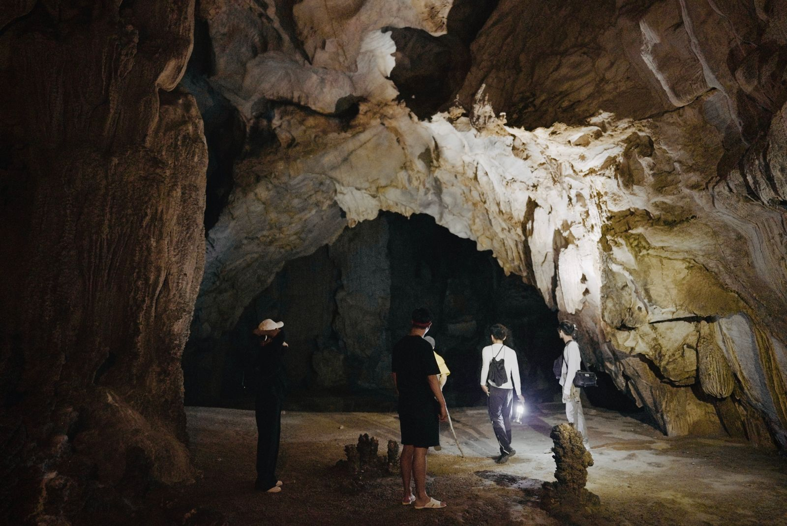

The hydrogeologist
Ana Kovač. I read springs for a living.
I grew up in Postojna, where the ground is famous for what it hides: rivers that vanish into rock and come back with different names. My MSc in hydrogeology at the University of Ljubljana turned a local suspicion into a profession — that in limestone country, the surface map is the least reliable document in the file.
Seven years followed in the groundwater section of a national geological survey: regional mapping, spring inventories, and the slow education of learning how often the aquifer disagrees with the report written about it. I have practised independently since, working for the people who carry the consequences of those disagreements — utilities that drink from springs, regulators who protect them, and developers who build above them.
My training is in hydrogeology and tracer hydrology; my field practice is built on fourteen seasons in the Dinaric karst, membership of the International Association of Hydrogeologists, and underground work done only in qualified company — cave work in this practice is team work, with trained cavers, or it does not happen.
My one professional prejudice, stated openly: I trust a spring in August more than a model in January. The model has read the literature. The spring has read the aquifer. Models earn their keep in my reports only after the gauges and the dye have had their say.

- Qualification
- MSc Hydrogeology, Ljubljana
- Before independence
- 7 years, national geological survey
- Field seasons
- 14, Dinaric karst
- Membership
- Intl. Association of Hydrogeologists
- Field base
- Postojna, Slovenia
How a study runs
Four stages.None of them skippable.
-
01
Reconnaissance & desk study
The catchment is walked before it is modelled: dolines, swallow holes, losing reaches, old quarries, the spring itself at whatever flow the season offers. The desk work — geology, cave registers, existing records — is read against the ground, and the disagreements between them become the study's questions. This visit is the fixed €450 reconnaissance, and the fixed fee for the whole study is set from it.
-
02
Gauges & baseline
Loggers go on the spring and, where it matters, on the sinking stream. Background samples are taken before any tracer is contemplated — a spring's natural fluorescence is measured first, so that later nobody mistakes the aquifer's own signal for our dye. A baseline recession is read if the season allows one.
-
03
The tracer test — with its permissions
Dye tracing is done in the open. Landowners consent in writing; the environmental authority is notified; any drinking-water undertaker whose source could receive the dye is informed before injection, not after arrival. The tracer — typically uranine, chosen for its low detection limit and long record of use in drinking-water catchments — is dosed to the distance and the flow, and the injection waits for the right water: a trace run at the wrong flow answers the wrong question, and I will postpone rather than spend a client's fee proving it.
-
04
Interpretation & report
Breakthrough curves are read for what they carry: first arrival, peak, recovery — and the detection limits are printed beside every absence. Recessions are fitted in segments. The report arrives as a plain-language summary a non-specialist can act on, the full technical text, and the underlying data as files the client owns. If the evidence is thin, the report says the evidence is thin.
What karst will not let me promise
Every practice has a page like this or should have. Mine is short because karst makes the points itself:
- Karst is heterogeneous. Two springs a valley apart can be different aquifers wearing similar hillsides. Nothing from one catchment is evidence about another.
- One trace is one flow condition. A connection proven at high flow may not exist at low flow, and a connection missed at low flow may open at high. Reports from this practice state the conditions in the conclusion, not in a footnote.
- A model is a hypothesis with good arithmetic. It organises what the gauges and the dye have established. Where it runs ahead of them, it is labelled as doing so.
- Licensing decisions belong to the regulator. I supply evidence, methods and interpretation. Anyone who promises you the decision itself is selling something that is not theirs.
- A negative result is a result. It will be reported with its detection limits, invoiced like any other finding, and filed in the log beside the successes — see Study 13.
Working together, in writing
Fees. Fixed fee after the reconnaissance visit, staged 40 / 40 / 20 across commission, close of fieldwork and delivery. Day rates and the estimator on the Record page are the whole basis — there is no second price list, and travel beyond 100 km is agreed at cost in advance.
Timing. Karst work is seasonal by physics, not by preference: tracer tests wait for flow windows, and monitoring means what it says — seasons. A start date is promised; a flow window is forecast honestly and never guaranteed.
Data & reports. The report and its underlying data belong to the client on final payment. This practice retains an anonymised methods record — what was done, what it found in general terms — because the next study is better for it; client identities and site data are never reused.
Availability. Two monitoring slots remain for the spring season; tracer work is booked to the autumn flow window. If your question is urgent and my calendar is wrong for it, I will say so and name colleagues who do this work well.